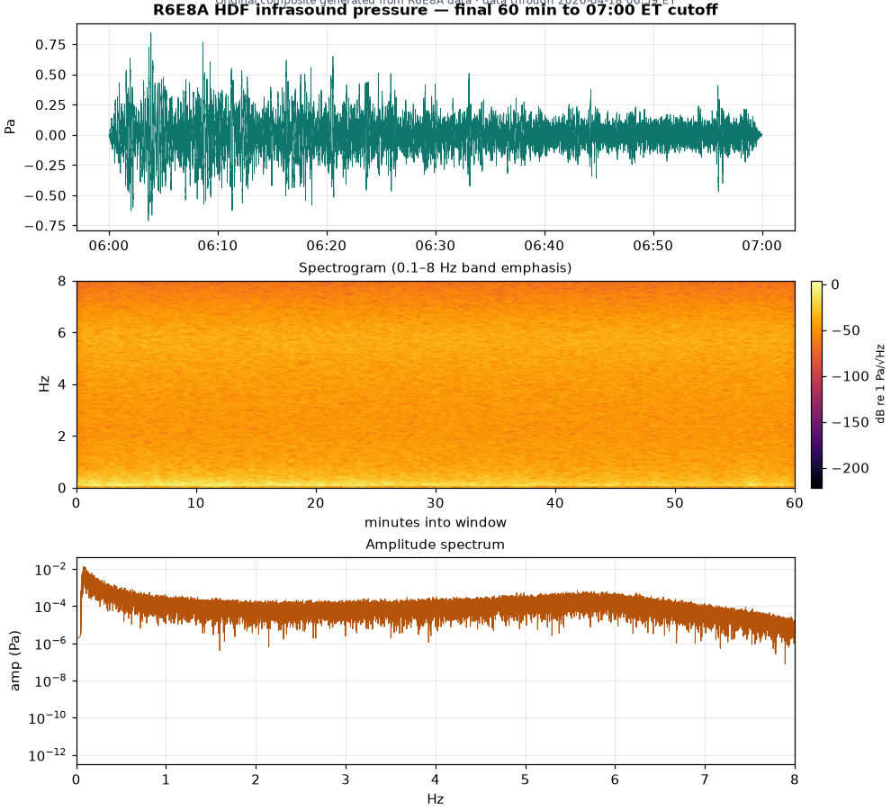
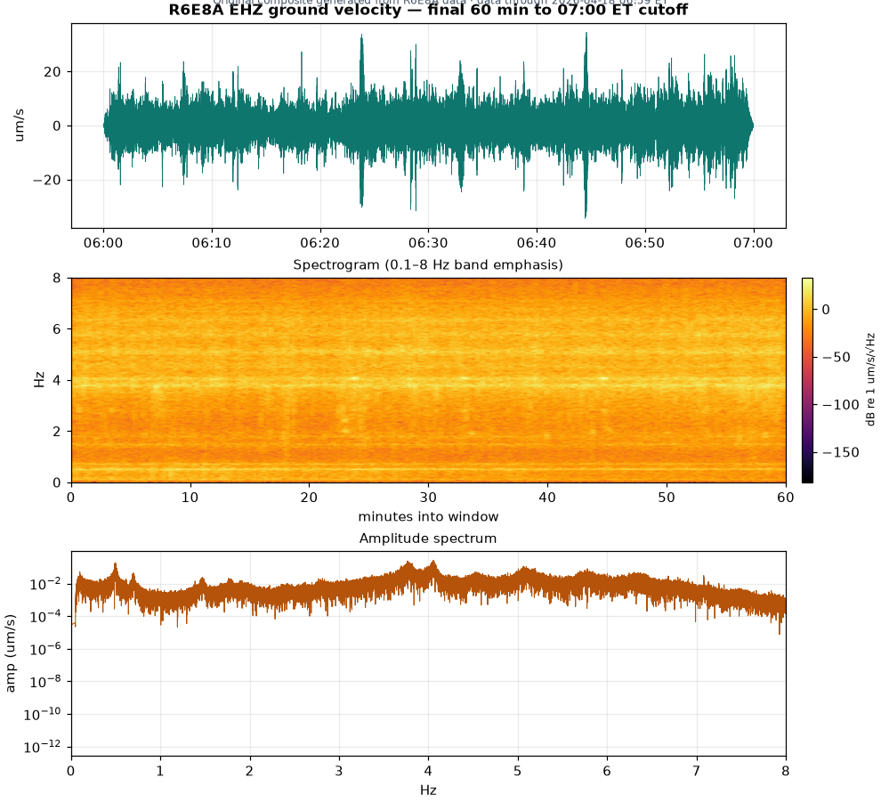

Channels at a glance
Measures very-low-frequency air-pressure changes, in pascals (Pa). Much of the infrasound range (below 20 Hz) is below ordinary human audibility. A calibrated pressure sensor is needed to quantify it.
Measures vertical up/down ground-motion velocity, in µm/s. Provided only as separate context. HDF and EHZ units are never mixed.
Fixed daily 24-hour report — 07:00 AM ET cutoff
This archived 24-hour report uses a fixed 7:00 AM ET cutoff and is generated after the Raspberry Shake archive delay; it is not a real-time feed. The official DataView panel below provides the closest available live view.
Original composite snapshot — final 60 min to 07:00 ET
Waveform, Inferno-style spectrogram, and amplitude spectrum, independently generated from R6E8A data (matplotlib/scipy) — not copied from any third-party UI. HDF (pressure) is primary; EHZ (velocity) is secondary. Exact window is labeled on each figure.


Closest available live view — official Raspberry Shake DataView
The official DataView panels below are the closest lawful near-real-time view. HDF (pressure) is shown prominently; EHZ (velocity) is secondary. These are official embeds — no raw waveform data is redistributed by this site.
Data powered by Raspberry Shake, S.A., a citizen-science project. Please visit raspberryshake.org and join the Citizen Science Community today! DOI: https://doi.org/10.7914/SN/AM
Key indicators — HDF pressure
Arrival focus — HDF pressure by hour
Window from 11:08 PM EDT, Jul 12 through the requested 3:48 AM, Jul 13. Hourly per-minute HDF RMS with change versus the prior observed bin and versus the pre-arrival hour (within-event change only — not a benchmark or reference distribution).
| Hour (EDT) | Obs. min | HDF mean (Pa) | Δ vs prior | Δ vs pre-arrival (within-event) | HDF peak (Pa) | HDF p95 (Pa) |
|---|
Measured finding — HDF
This report describes a measured pressure / infrasound signal at one sensor only. The station record does not by itself identify the source, the propagation path, conditions at other locations, or compliance with a differently weighted standard.
HDF time-series
24-hour HDF pressure — per-minute RMS
PaArrival zoom — HDF pressure with arrival marker & pending segment
PaExport — live window
CSV columns: time_utc, time_detroit, pressure_rms_pa, velocity_rms_m_s, pressure_event_score, velocity_event_score. Missing / pending minutes are left blank — never zero-filled and never interpolated.
Key statistics vs external aggregate baseline — % difference
What HDF measures
HDF is the official FDSN channel code for the Raspberry Boom / Shake pressure sensor (sometimes informally called “HDZ”; HDF is used throughout this report). It records band-limited, response-corrected air-pressure RMS in pascals (Pa).
What EHZ measures
EHZ is the vertical geophone channel — how fast the ground moves up and down — displayed as response-corrected ground velocity in micrometers per second (µm/s).
Baseline Source Credibility
Baseline data
The quantitative comparison baseline is derived only from public Raspberry Shake peer channels — no institution, university, or agency supplies a baseline value:
- HDF: arithmetic mean 0.120031 Pa across 27 valid matched peer stations.
- EHZ: arithmetic mean 1.37637 µm/s across 22 valid matched peer stations.
Each peer value is drawn from the same channel and units (HDF pressure in Pa; EHZ ground velocity in µm/s), response-corrected, and computed over the same frequency band and day window as R6E8A. The peer set is a deterministic sample (fixed, reproducible selection — not hand-picked). HDF and EHZ baselines are never cross-compared; each channel is measured only against its own peer mean.
Interpretive sources
The following authoritative sources were reviewed to interpret what these channels measure and how very-low-frequency pressure is perceived. They provide context only and do not supply the peer baseline values above:
- Raspberry Shake — Basic Concepts raspberryshake.org/raspberry-shake-basic-concepts
- PLOS ONE — perception of 8 Hz infrasound doi.org/10.1371/journal.pone.0229088
- NIH / PMC — review of infrasound effects pmc.ncbi.nlm.nih.gov/articles/PMC7199630
These sources provide context only and do not supply any baseline value used here. The band-limited Pa RMS metric shown here is not a dB SPL exposure measurement.
How to interpret HDF
Audibility and perception thresholds at very low frequencies are high and vary substantially between people. When sufficiently intense, research indicates infrasound can be perceived through the auditory system, but the mechanism and individual perception vary. The band-limited Pa RMS values shown here are not dB SPL exposure measurements and cannot by themselves be used to establish harm.
How to interpret EHZ
EHZ is secondary corroborating context only. It is compared solely to its own peer baseline and is never cross-compared with HDF pressure values.
Every documented day for AM.R6E8A was processed at one-minute RMS for both channels (HDF pressure Pa, EHZ ground velocity µm/s), response-corrected, band 0.1–8 Hz. Each channel has two leading panels: a Top 20 list of the strongest contiguous one-minute runs above the channel-specific external peer aggregate arithmetic mean, and an Average vs Baseline view of daily and fixed quarter-day segment means. Values are shown as percent difference from that aggregate mean — ((value − aggregate mean) / aggregate mean) × 100. HDF and EHZ are compared only to their own channel baselines; the two are never mixed.
A. HDF Top 20 — longest/strongest runs above aggregate mean
TOP · above baseline| # | Date | Start ET | End ET | Dur (min) | Event peak | Event mean | % above mean | Aggregate mean | Source | Completeness |
|---|
B. HDF Average vs Aggregate Baseline
AVERAGE · daily & segment means| Date (ET) | Status | Minutes (cov %) | Daily mean | % vs aggregate mean | Samples > mean | Spike status | Source |
|---|
Quarter-day segment averages — fixed local America/Detroit windows
Segments are fixed local clock windows (DST handled by local timestamps). Each cell shows the segment mean, % versus the aggregate mean, and the actual minutes available (partial/gap disclosed).
| Date (ET) | 00:00–06:00 | 06:00–12:00 | 12:00–18:00 | 18:00–24:00 |
|---|
Note: these are instrument-derived acoustic/seismic averages only. Occupancy or presence observations are separate, user-supplied annotations and are not part of the instrument data unless later provided. Nothing here infers presence, occupancy, cause, health effect, hazard, violation, or personal correlation.
Trailing historical HDF — daily summary
Daily HDF (pressure) RMS across all requested recorded days. Each bar is a full-day per-minute RMS aggregate reconstructed from FDSN with no interpolation. Days with no source data appear as explicit gap bands, not zeros.
External reference — Raspberry Shake HDF network-peer percentile
The primary benchmark is the distribution of the same response-corrected HDF pressure metric across other public Raspberry Shake stations — the only metric-matched external comparison (identical instrument model, HDF sensitivity, unweighted Pa units, matched band and window). R6E8A is placed as a percentile within that peer distribution, not against its own history.
Historical HDF vs verified public-network baseline
Every documented day’s HDF pressure plotted against the verified external Raspberry Shake HDF peer distribution — horizontal Median / P75 / P95 / P99 reference lines. Each point is a line + marker colored by its fixed percentile band, so spikes are unmistakable. Coverage gaps are drawn as hatched bands and are never interpolated. Daily-mean and daily-peak are separate, metric-matched views: peak points are compared only to the peer peak-minute distribution, never to daily-mean thresholds.
Exceedances — documented days at or above peer P75
Documented days whose HDF value reaches at least the 75th percentile of the peer distribution for the selected metric, worst first. Use the toggle above to switch between daily-mean and daily-peak exceedances.
| Date (Detroit) | DOY | Value (Pa) | Band | Peer pctl | × peer median | dB vs median | Source | Coverage |
|---|
All-days CSV columns: date, day_of_year, status, source, coverage_pct, metric, value_pa, peer_median_pa, peer_p75_pa, peer_p95_pa, peer_p99_pa, peer_percentile, band, ratio_vs_median, db_vs_median. The dB difference uses 20·log10(value/peer_median) for the same calibrated metric and band only; gap days are exported with status=gap and empty values.
Dataset statistics
Documented days, worst points and events per channel, and severity-band day counts — all computed from the same synchronized dataset that drives the charts, table, and briefing.
Gap inventory
Every coverage gap in the documented window — intra-day dropouts within the uploaded local days and whole-day gaps in the FDSN range. Gaps are never zero-filled or interpolated.
Monitoring-priority percentile bands (fixed, external peer reference)
These tiers are a fixed monitoring-priority ordering defined against the external Raspberry Shake HDF peer distribution (not this station's own history). The immutable rules are Red ≥ P99, Orange P95–<P99, Yellow P75–<P95, and Reference < P75 of the peer daily-mean HDF pressure. They do not change with the data and are not medical or human-exposure hazard bands. Counts show how many documented R6E8A days fall in each tier by daily-mean HDF RMS. If the external peer distribution is unavailable, counts are shown as N/A rather than derived from this station alone.
Daily drilldown
Every requested day, in order. Click a row for its provenance. Gap days are listed explicitly.
| Date (Detroit) | DOY | Status | Obs. min | Coverage | Mean (Pa) | Median (Pa) | Peak (Pa) |
|---|
Export — historical daily
Daily CSV columns: date, day_of_year, status, observed_minutes, coverage_pct, hdf_mean_pa, hdf_median_pa, hdf_peak_pa, hdf_p95_pa. Gap days are included with empty values and status=gap. Source-reconstructed daily summaries decimate to 20 Hz before response removal for tractability (validated <4% deviation vs full 100 Hz deconvolution in the infrasound band).
24-Hour briefing
Evidence-first daily briefing mirroring this dashboard. Preview below; export as text. Not sent — no email is dispatched from this dashboard.
EHZ ground velocity — secondary context
EHZ is the vertical ground-velocity channel (m/s, shown here in µm/s). It is not the pressure channel and is provided only as corroborating context for the same window. HDF (pressure) remains the primary measurement.
24-hour EHZ ground-velocity — per-minute RMS
µm/sMethods & limitations
- Primary channel. HDF — pressure / infrasound, reported in pascals (Pa). EHZ ground velocity is secondary context only.
- Response removal. Instrument response deconvolved using station StationXML metadata.
- Units. HDF → pressure (Pa); EHZ → ground velocity (m/s, shown as µm/s).
- Pre-filter. Live window: cosine taper at 0.05 / 0.1 / 45 / 49 Hz, 60 dB water level. Historical daily: decimated to 20 Hz then 0.05 / 0.1 / 8 / 9 Hz.
- Aggregation. 60-second demeaned RMS per minute; hourly and daily statistics are means / medians / peaks of those minutes.
- No interpolation. Missing minutes and missing days are left blank / shown as gaps, never filled or zeroed.
- Pending data. Raspberry Shake FDSN can lag; not-yet-available minutes are labeled pending rather than counted as zero.
This is instrument data only. A measured pressure / infrasound signal at one sensor does not by itself identify the source, the propagation path, conditions at other locations, or compliance with a differently weighted standard.
Frequency and pressure context (external reference)
The R6E8A HDF channel records absolute air-pressure fluctuations in pascals after the station’s instrument response is removed, referenced to 20 µPa (0.00002 Pa), following the Raspberry Shake HDF conversion (Pa = counts / 56000) documented in the Raspberry Shake Developer’s Corner. Because this is an unweighted, broadband pressure metric, it is only meaningfully compared against other measurements expressed in the same calibrated units over the same frequency band and time window. The most technically appropriate external reference is the distribution of the same HDF pressure metric across other public Raspberry Shake stations, whose data are freely retrievable through the network’s FDSN web services; R6E8A’s values are therefore presented as a percentile within that peer distribution, using identical response correction and matched frequency bands (cross-station comparison requires response removal and matched bands, per peer-reviewed infrasound methodology). A change in pressure amplitude can be expressed in decibels as 20·log10(ratio), so a fourfold increase in the same band-matched pressure metric corresponds to +12.0 dB — a statement about the measured signal’s magnitude, not about any external standard.
Published community and infrasound frameworks use fundamentally different quantities and are shown below strictly as non-comparable context. Municipal ordinances and building-comfort criteria are largely A-weighted (dBA) or qualitative and measured at property lines; A-weighting is essentially blind to the sub-20 Hz band this channel measures. The dedicated infrasound weighting is G-weighting (dBG) under ISO 7196, which requires spectral weighting to compute. The Peterson NHNM/NLNM is a seismic ground-motion PSD reference, not acoustic pressure. None of these is an HDF pass/fail line, and none is used here to label the data safe, unsafe, or hazardous.
Published context (not directly comparable)
| Framework | Metric / weighting | Stated value(s) | Why not directly comparable to HDF Pa |
|---|---|---|---|
| ISO 7196:1995 (dBG) | G-weighted SPL, ref 20 µPa | Hearing threshold ≈ 96 dBG; sample dwelling limits 85–92 dBG | Requires G-weighting of the spectrum; not an unweighted Pa RMS; values are for-scale, not verdicts |
| CDC/NIOSH HHE 2019-0119-3362 / ACGIH | One-third-octave SPL (dB); ACGIH freq-specific ceiling | ACGIH ≤145 dB (<80 Hz) / 150 dB overall; measured 66–85 dB at 20 Hz | Occupational ceiling far above residential ambient; not a residential pass/fail line |
| Peterson NHNM / NLNM | Seismic PSD, dB rel (m/s²)²/Hz | New Low/High Noise Models (ground acceleration) | Ground motion, not air pressure; applies to seismic channels, not HDF |
| NYC Admin Code §24-232 octave table | Unweighted octave-band SPL | 31.5 Hz=70, 63=61, 125=53… dB (receiving-property) | Closest analog, but starts at 31.5 Hz (above most of HDF’s band) and is a property-line compliance SPL |
| Detroit Code Ch 36 (station’s city) | Qualitative — “unreasonable noise” | No decibel limit | No metric at all; the station’s own jurisdiction sets no numeric line |
| University EHS / hotel guidance | OSHA dBA 8-h TWA; hotel NC/RC curves | Action 85 dBA / PEL 90 dBA; guest rooms NC/RC 25–35 | A-weighted occupational dose / HVAC comfort; no sub-20 Hz infrasound Pa benchmark exists |
Verified/accessed 2026-07-13. These frameworks are shown for scale and context only; none shares R6E8A’s single-sensor, unweighted-Pa basis, and none is applied as a safety, hazard, or exposure threshold for this data.
Data sources & citations
- Raspberry Shake FDSN manualmanual.raspberryshake.org/fdsn.html
- FDSN dataselect — HDF (pressure / infrasound), live windowdata.raspberryshake.org/fdsnws/dataselect/1/query?net=AM&sta=R6E8A&loc=00&cha=HDF
- FDSN dataselect — EHZ (ground velocity, secondary)data.raspberryshake.org/fdsnws/dataselect/1/query?net=AM&sta=R6E8A&loc=00&cha=EHZ
- FDSN station metadata (response level)data.raspberryshake.org/fdsnws/station/1/query?net=AM&sta=R6E8A&loc=00&level=response
Disclaimer: All data submitted by the occupant with data sharing enabled is also maintained by the RaspberryShake.org project. For any values that need to be verified, the station’s FDSN channel from Raspberry Shake is publicly accessible and can be retrieved and independently verified by any person via the network’s FDSN web services, subject to the terms of use, terms of service, and data-sharing license of the RaspberryShake.org project.